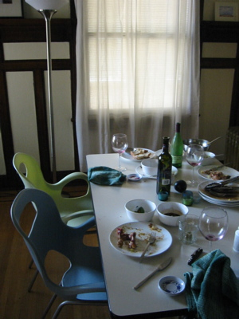

There’s no better confirmation of being ‘moved in’ to a new apartment than a successful dinner party.

How do you know if a dinner party is successful? There are a couple of key indicators:
- A terribly dirty kitchen
- Terribly dirty dishes
- Multiple emptied wine bottles
On the menu:
- Roasted chicken, ?butterflied? and broiled with a mustard and balsalmic vinegar rub
- Garlic smashed potatoes
- Carrots in butter sauce
- Seared and simmered asparagus
- Ample wine
Butterflying a chicken allows the bird to lie flat in a roasting pan (my favorite is my inherited cast iron skillet). The chicken will cook much faster this way (about half the time) as more of the surface area is exposed to the heat.
Broiling works very well. I start with the skin side down, brushing a marinade on what was the inside of the chicken. The marinade will cook into the chicken (and run down into the pan, perfect for creating a pan-sauce later).
Place the pan on the highest rack in the oven under the broiler, and broil for about 20 minutes, or until the meat is nicely browned.
Remove the pan from the oven, place on the stove top. Using tongs, carefully flip the chicken over, skin side up, and place back under the broiler – skin side up.
Broil again for about 15 minutes. The chicken is already quite hot – so it won’t take as long to brown.
After 15 minutes have passed, the chick will be very close to done. Finish cooking in the oven set at 375? F for about 15 more minutes. Test for doneness with a meat thermometer, or poke the thickest part of the thigh with a fork. If the juices runs clear, it’s probably done.
Remove the chicken from the oven, remove from the pan, and place on a cutting board to rest. Don’t cut the chicken for at least 5 minutes, or all the juices will run out onto your cutting board, on the floor, down the hall, and out into the street. Cover the chicken loosely with foil to preserve the heat.
Place the roasting pan on the stove top over low heat. Melt about a tablespoon of butter in the juices, then add half a cup of cheap white wine, and a shy teaspoon of cornstarch (no flour. flour is lumpy and gluey in a sauce like this).
Whisk the sauce over medium heat until the sauce is thick enough to coat the back of a spoon.
A butterflied chicken is easy to carve. Split in half between the breasts. The legs should easily come off at the thigh, maybe even without cutting. Place all the chicken quarters on a serving plate and drizzle with the pan sauce.
Serving such a bird will make women want you and men want to be you. You’ll be a celebrity. At least as long as the wine lasts.